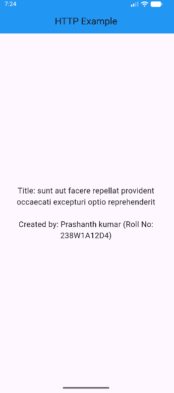

Learning Objectives
- Fetch data from public REST APIs using the http package
- Parse JSON responses and handle API data
- Implement error handling for network requests
- Display API data in Flutter widgets with loading states
Step 1: Add HTTP Dependency
Before making HTTP requests, you need to add the http package to your project. This package provides methods for making GET, POST, and other HTTP requests.
pubspec.yaml Configuration:
dependencies:
flutter:
sdk: flutter
http: ^1.2.0 # Add at line 42 (Check latest version on pub.dev)
Note: After adding the dependency, run flutter pub get in the terminal to download the package.
Step 2: Fetch Data from REST API
This example demonstrates how to fetch data from a REST API, parse JSON response, and display it in your Flutter app. It includes proper error handling and loading states for a better user experience.
Key Concepts:
- http.get(): Makes a GET request to fetch data from an API
- async/await: Handles asynchronous operations
- jsonDecode(): Parses JSON string into Dart objects
- setState(): Updates UI when data is received
- try-catch: Handles network errors gracefully
import 'package:flutter/material.dart';
import 'package:http/http.dart' as http;
import 'dart:convert';
void main() {
runApp(MyApp());
}
class MyApp extends StatelessWidget {
@override
Widget build(BuildContext context) {
return MaterialApp(
debugShowCheckedModeBanner: false,
home: HomePage(),
);
}
}
/// Created by: Prashanth kumar (Roll No: 238W1A12D4)
class HomePage extends StatefulWidget {
@override
State createState() => _HomePageState();
}
class _HomePageState extends State {
String message = "Loading...";
@override
void initState() {
super.initState();
fetchData();
}
Future fetchData() async {
final url = Uri.parse('https://jsonplaceholder.typicode.com/posts/1');
try {
final response = await http.get(
url,
headers: {
'User-Agent': 'Mozilla/5.0',
'Accept': 'application/json',
},
);
if (response.statusCode == 200) {
final jsonData = jsonDecode(response.body);
setState(() {
message = "Title: ${jsonData['title']}\n\nCreated by: Prashanth kumar (Roll No: 238W1A12D4)";
});
} else {
setState(() {
message = "Error: ${response.statusCode}";
});
}
} catch (e) {
setState(() {
message = "Failed to load data: $e";
});
}
}
@override
Widget build(BuildContext context) {
return Scaffold(
appBar: AppBar(
title: Text('HTTP Example'),
backgroundColor: Colors.blue,
centerTitle: true,
),
body: Center(
child: Padding(
padding: EdgeInsets.all(20),
child: Text(
message,
textAlign: TextAlign.center,
style: TextStyle(fontSize: 18),
),
),
),
);
}
}
How It Works:
- initState(): Called when widget is first created, triggers data fetch immediately
- Uri.parse(): Converts string URL into Uri object required by http.get()
- await http.get(): Waits for API response before continuing execution
- response.statusCode: Checks if request was successful (200 = OK)
- jsonDecode(): Converts JSON string to Map for easy access
- setState(): Updates the UI with fetched data
- try-catch: Catches network errors and displays error messages

Popular Public APIs for Testing
Here are some free public APIs you can use to test HTTP requests in your Flutter applications:
1. JSONPlaceholder (Fake REST API)
https://jsonplaceholder.typicode.com/posts/1
{
"userId": 1,
"id": 1,
"title": "sunt aut facere repellat provident",
"body": "quia et suscipit..."
}
2. Dog CEO (Random Dog Images)
https://dog.ceo/api/breeds/image/random
https://images.dog.ceo/breeds/husky/n02110185_1469.jpg
{
"message": "https://images.dog.ceo/breeds/husky/n02110185_1469.jpg",
"status": "success"
}
3. DummyJSON (E-commerce Data)
https://dummyjson.com/products/1
{
"id": 1,
"title": "iPhone 9",
"price": 549,
"description": "An apple mobile which is nothing like apple"
}
4. ZenQuotes (Inspirational Quotes)
https://zenquotes.io/api/random
[
{
"q": "The best time to plant a tree was 20 years ago.",
"a": "Chinese Proverb",
"h": "...
"
}
]
Best Practices for HTTP Requests
- Always Use Try-Catch: Network requests can fail due to connectivity issues
- Check Status Codes: Verify response.statusCode == 200 before processing data
- Add Headers: Some APIs require User-Agent and Accept headers
- Show Loading State: Display "Loading..." while fetching data
- Handle Timeouts: Use timeout parameter to prevent indefinite waiting
- Parse JSON Safely: Check if keys exist before accessing them
- User Feedback: Show clear error messages to users
Common HTTP Status Codes:
- 200 OK: Request successful, data returned
- 404 Not Found: Requested resource doesn't exist
- 500 Internal Server Error: Server-side error occurred
- 401 Unauthorized: Authentication required
- 403 Forbidden: Access denied
Key Takeaways
- HTTP Package: Add dependency in pubspec.yaml to make API requests
- async/await: Essential for handling asynchronous network operations
- Uri.parse(): Converts string URLs to Uri objects for http methods
- jsonDecode(): Parses JSON strings into Dart Map/List objects
- Error Handling: Use try-catch blocks to handle network failures gracefully
- Status Codes: Always check response.statusCode before processing data
- setState(): Updates UI after receiving API data
- Loading States: Provide user feedback while data is being fetched
- Headers: Some APIs require specific headers like User-Agent
- Public APIs: Use free APIs like JSONPlaceholder for testing and learning